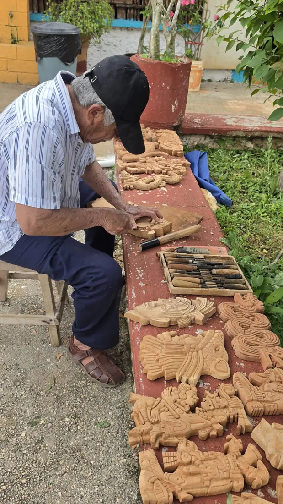
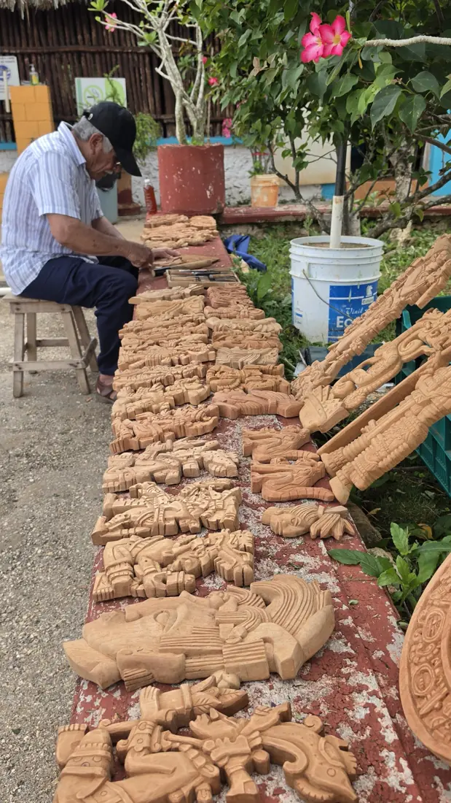
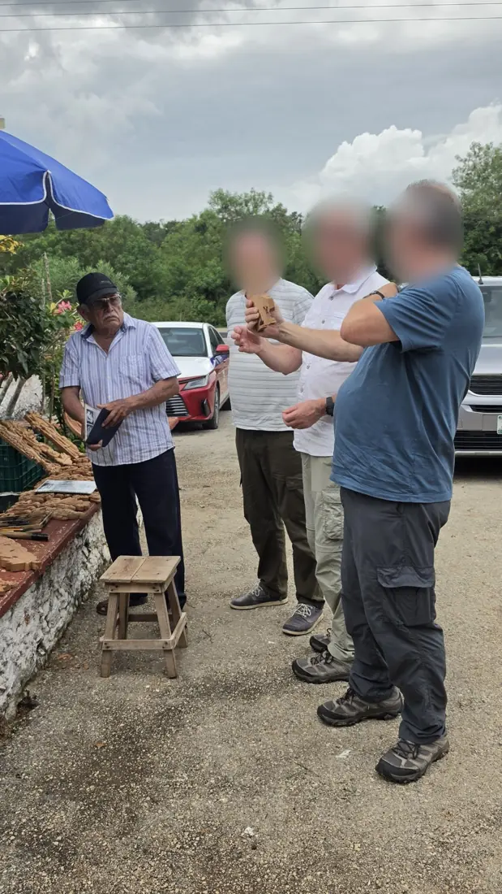
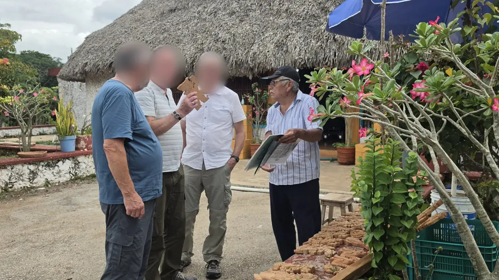
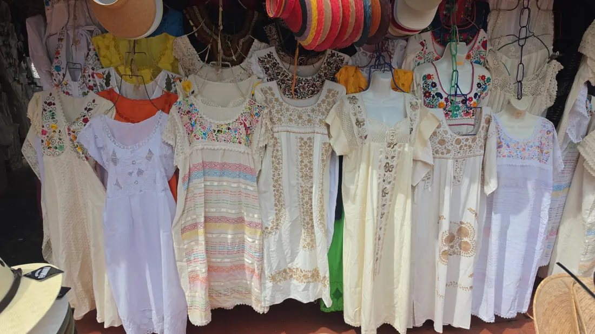

Uxmal desde Campeche, arma tu tour
Te recogemos en tu hotel, te llevamos a Uxmal, te esperamos y te regresamos. Si quieres, agrega el Museo del Chocolate y la comida. Taxi sedán privado hasta 4 personas.
Arma tu tour a Uxmal
| 🏛️ Uxmal: ida, hasta 2 h de espera y regreso | $4,000 |
| +$400 | |
| +$400 | |
| Total | $4,000 MXN |
Tu día
En el camino
Fotos reales de nuestros tours: artesanías de la región y Don Carlos Cancino, artesano maya, tallando madera cerca de Uxmal. En el tour puedes conocer su trabajo y llevarte una pieza hecha a mano.





Lo que incluye tu viaje
Preguntas frecuentes
¿Cuánto cuesta ir a Uxmal desde Campeche en taxi?
$4,000 MXN en taxi sedán privado para hasta 4 personas: ida, hasta 2 horas de espera en Uxmal y regreso. Museo del Chocolate +$400 y parada para comer +$400.
¿Cuánto dura el tour?
Unas 6 horas solo Uxmal. Cada opción extra agrega hasta 1 hora 20 minutos.
¿Están incluidas las entradas y la comida?
No. Las entradas se pagan en taquilla y la comida la paga cada quien.
¿Me recogen en mi hotel?
Sí, en tu hotel o en cualquier punto de Campeche.